Summary
This experiment investigates soil compaction testing. Box-Behnken design to maximize dry density and identify optimal moisture content by tuning water content, compaction energy, and layer count.
The design varies 3 factors: water pct (%), ranging from 8 to 20, blows per layer (blows), ranging from 15 to 56, and layers (layers), ranging from 3 to 5. The goal is to optimize 2 responses: dry density kg m3 (kg/m3) (maximize) and cbr pct (%) (maximize). Fixed conditions held constant across all runs include hammer kg = 2.5, mold = proctor.
A Box-Behnken design was chosen because it efficiently fits quadratic models with 3 continuous factors while avoiding extreme corner combinations — requiring only 15 runs instead of the 8 needed for a full factorial at two levels.
Quadratic response surface models were fitted to capture potential curvature and factor interactions. The RSM contour plots below visualize how pairs of factors jointly affect each response.
Key Findings
For dry density kg m3, the most influential factors were blows per layer (62.9%), layers (22.1%), water pct (15.0%). The best observed value was 1829.0 (at water pct = 8, blows per layer = 35.5, layers = 5).
For cbr pct, the most influential factors were blows per layer (41.4%), layers (35.7%), water pct (23.0%). The best observed value was 25.0 (at water pct = 14, blows per layer = 35.5, layers = 4).
Recommended Next Steps
- Run confirmation experiments at the predicted optimal settings to validate the model.
- Consider whether any fixed factors should be varied in a future study.
Experimental Setup
Factors
| Factor | Low | High | Unit |
|---|
water_pct | 8 | 20 | % |
blows_per_layer | 15 | 56 | blows |
layers | 3 | 5 | layers |
Fixed: hammer_kg = 2.5, mold = proctor
Responses
| Response | Direction | Unit |
|---|
dry_density_kg_m3 | ↑ maximize | kg/m3 |
cbr_pct | ↑ maximize | % |
Configuration
{
"metadata": {
"name": "Soil Compaction Testing",
"description": "Box-Behnken design to maximize dry density and identify optimal moisture content by tuning water content, compaction energy, and layer count"
},
"factors": [
{
"name": "water_pct",
"levels": [
"8",
"20"
],
"type": "continuous",
"unit": "%"
},
{
"name": "blows_per_layer",
"levels": [
"15",
"56"
],
"type": "continuous",
"unit": "blows"
},
{
"name": "layers",
"levels": [
"3",
"5"
],
"type": "continuous",
"unit": "layers"
}
],
"fixed_factors": {
"hammer_kg": "2.5",
"mold": "proctor"
},
"responses": [
{
"name": "dry_density_kg_m3",
"optimize": "maximize",
"unit": "kg/m3"
},
{
"name": "cbr_pct",
"optimize": "maximize",
"unit": "%"
}
],
"settings": {
"operation": "box_behnken",
"test_script": "use_cases/229_soil_compaction/sim.sh"
}
}
Experimental Matrix
The Box-Behnken Design produces 15 runs. Each row is one experiment with specific factor settings.
| Run | water_pct | blows_per_layer | layers |
|---|
| 1 | 14 | 15 | 3 |
| 2 | 14 | 35.5 | 4 |
| 3 | 20 | 35.5 | 5 |
| 4 | 20 | 35.5 | 3 |
| 5 | 14 | 35.5 | 4 |
| 6 | 14 | 35.5 | 4 |
| 7 | 8 | 35.5 | 5 |
| 8 | 20 | 15 | 4 |
| 9 | 14 | 15 | 5 |
| 10 | 20 | 56 | 4 |
| 11 | 8 | 35.5 | 3 |
| 12 | 14 | 56 | 5 |
| 13 | 8 | 15 | 4 |
| 14 | 8 | 56 | 4 |
| 15 | 14 | 56 | 3 |
Step-by-Step Workflow
1
Preview the design
$ doe info --config use_cases/229_soil_compaction/config.json
2
Generate the runner script
$ doe generate --config use_cases/229_soil_compaction/config.json \
--output use_cases/229_soil_compaction/results/run.sh --seed 42
3
Execute the experiments
$ bash use_cases/229_soil_compaction/results/run.sh
4
Analyze results
$ doe analyze --config use_cases/229_soil_compaction/config.json
5
Get optimization recommendations
$ doe optimize --config use_cases/229_soil_compaction/config.json
6
Multi-objective optimization
With 2 competing responses, use --multi to find the best compromise via Derringer–Suich desirability.
$ doe optimize --config use_cases/229_soil_compaction/config.json --multi
7
Generate the HTML report
$ doe report --config use_cases/229_soil_compaction/config.json \
--output use_cases/229_soil_compaction/results/report.html
Features Exercised
| Feature | Value |
|---|
| Design type | box_behnken |
| Factor types | continuous (all 3) |
| Arg style | double-dash |
| Responses | 2 (dry_density_kg_m3 ↑, cbr_pct ↑) |
| Total runs | 15 |
Analysis Results
Generated from actual experiment runs using the DOE Helper Tool.
Response: dry_density_kg_m3
Top factors: blows_per_layer (62.9%), layers (22.1%), water_pct (15.0%).
ANOVA
| Source | DF | SS | MS | F | p-value |
|---|
| Source | DF | SS | MS | F | p-value |
| water_pct | 2 | 704.4690 | 352.2345 | 0.057 | 0.9450 |
| blows_per_layer | 2 | 10798.3262 | 5399.1631 | 0.873 | 0.4539 |
| layers | 2 | 1867.4333 | 933.7167 | 0.151 | 0.8622 |
| Lack | of | Fit | 6 | 15558.7048 | 2593.1175 |
| Pure | Error | 2 | 12366.0000 | | |
| Error | 8 | 27924.7048 | 6183.0000 | | |
| Total | 14 | 41294.9333 | 2949.6381 | | |
Pareto Chart
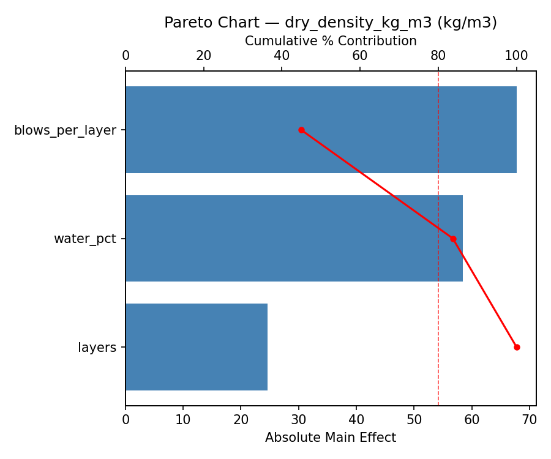
Main Effects Plot
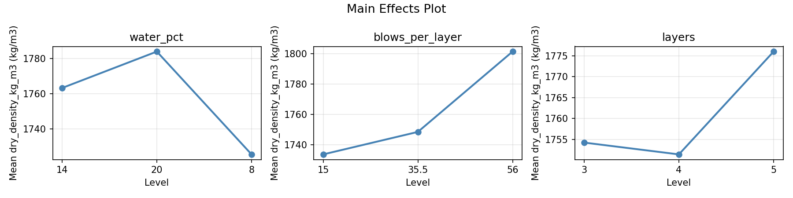
Normal Probability Plot of Effects
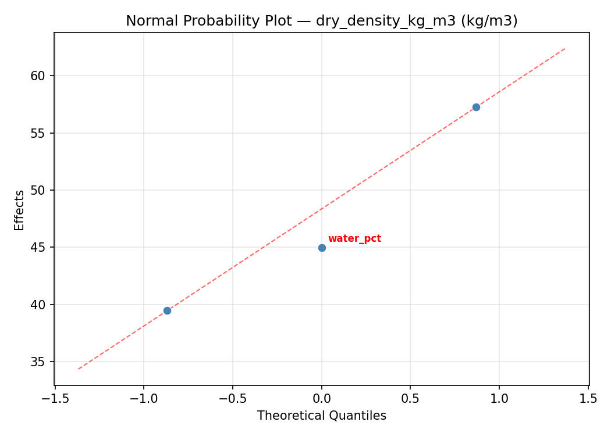
Half-Normal Plot of Effects
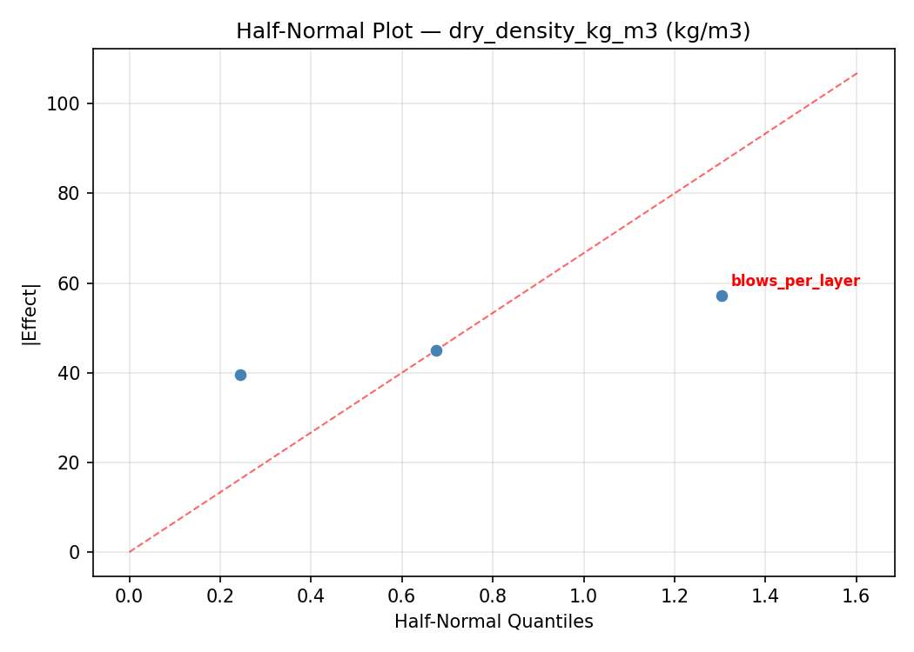
Model Diagnostics
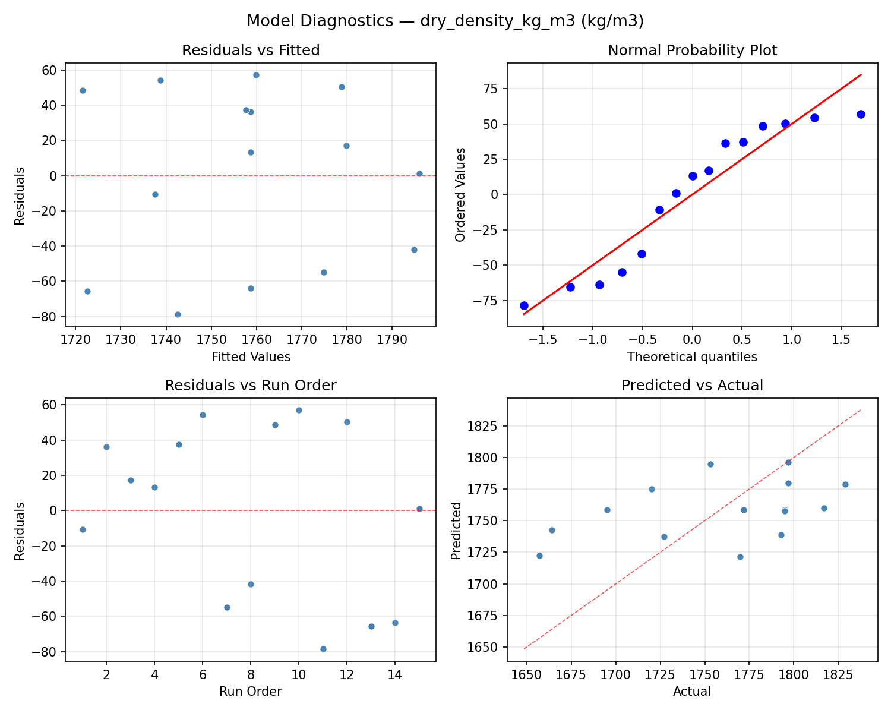
Response: cbr_pct
Top factors: blows_per_layer (41.4%), layers (35.7%), water_pct (23.0%).
ANOVA
| Source | DF | SS | MS | F | p-value |
|---|
| Source | DF | SS | MS | F | p-value |
| water_pct | 2 | 28.9929 | 14.4964 | 1.175 | 0.3568 |
| blows_per_layer | 2 | 100.1357 | 50.0679 | 4.060 | 0.0607 |
| layers | 2 | 86.3857 | 43.1929 | 3.502 | 0.0808 |
| Lack | of | Fit | 6 | 143.4190 | 23.9032 |
| Pure | Error | 2 | 24.6667 | | |
| Error | 8 | 168.0857 | 12.3333 | | |
| Total | 14 | 383.6000 | 27.4000 | | |
Pareto Chart

Main Effects Plot
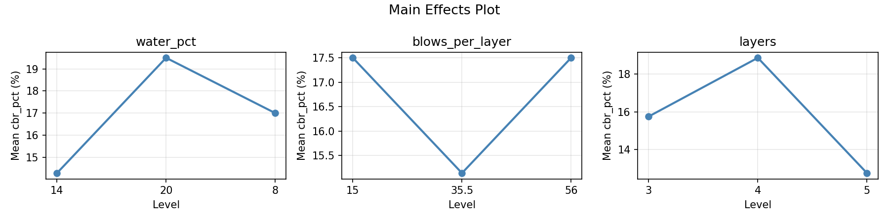
Normal Probability Plot of Effects
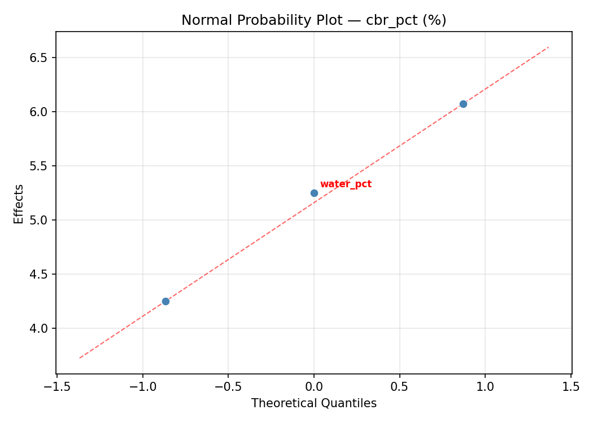
Half-Normal Plot of Effects
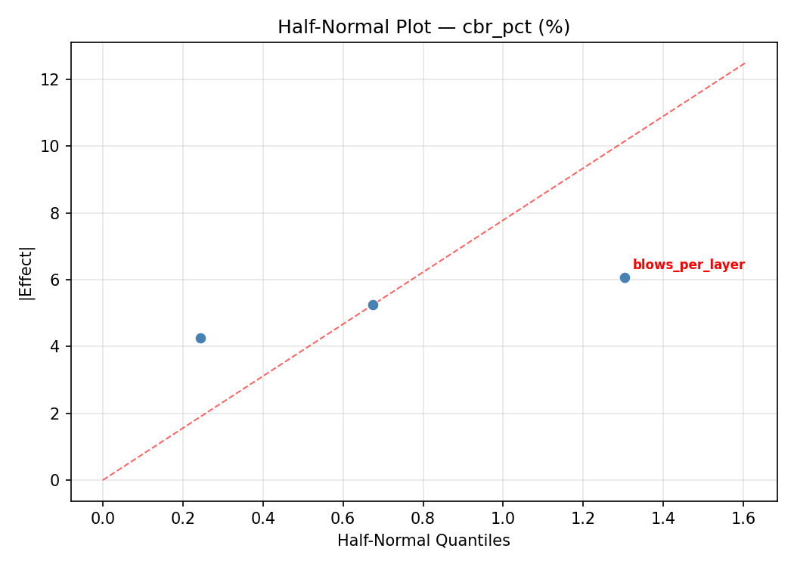
Model Diagnostics
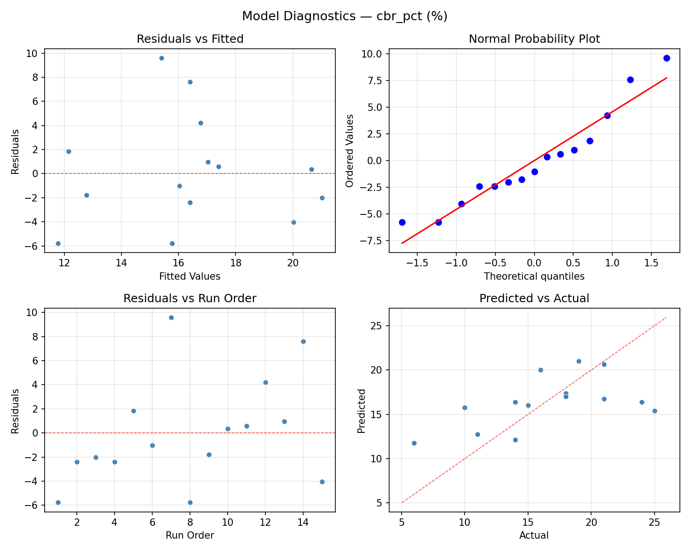
Response Surface Plots
3D surfaces fitted with quadratic RSM. Red dots are observed data points.
cbr pct blows per layer vs layers

cbr pct water pct vs blows per layer
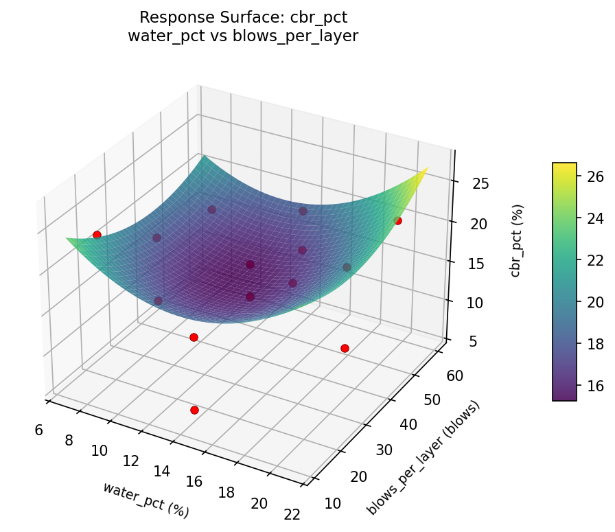
cbr pct water pct vs layers
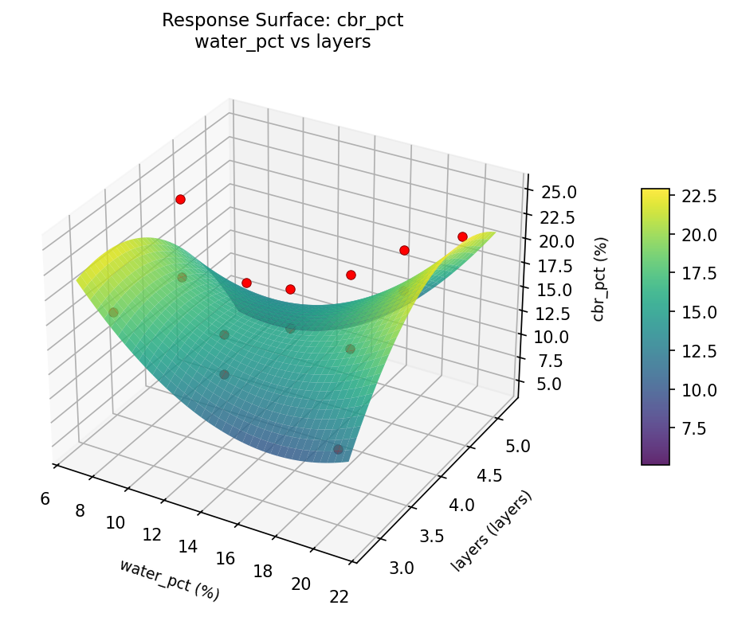
dry density kg m3 blows per layer vs layers

dry density kg m3 water pct vs blows per layer

dry density kg m3 water pct vs layers
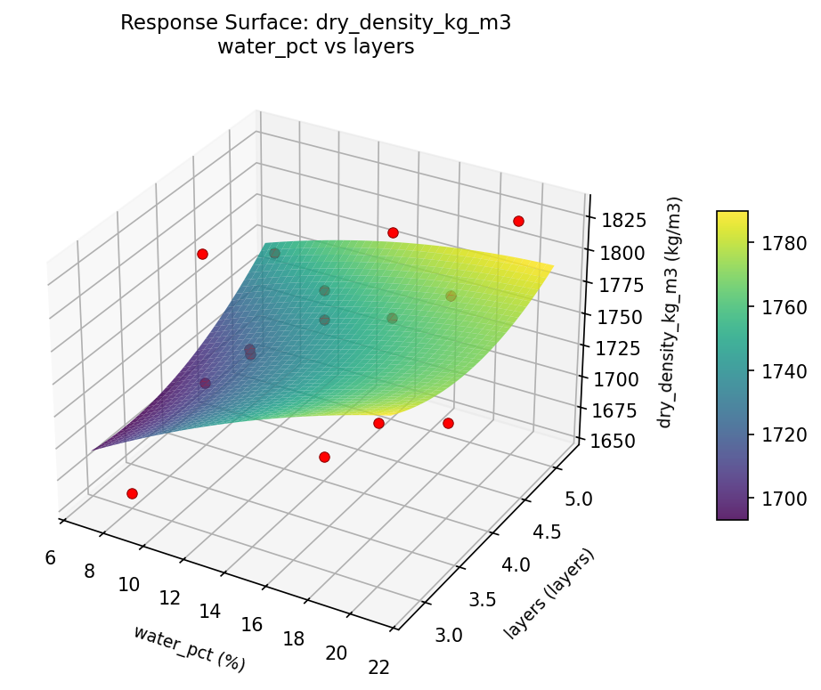
Multi-Objective Optimization
When responses compete, Derringer–Suich desirability finds the best compromise.
Each response is scaled to a 0–1 desirability, then combined via a weighted geometric mean.
Overall Desirability
D = 0.8728
Per-Response Desirability
| Response | Weight | Desirability | Predicted | Dir |
|---|
dry_density_kg_m3 |
1.5 |
|
1829.00 0.9545 1829.00 kg/m3 |
↑ |
cbr_pct |
1.0 |
|
21.00 0.7632 21.00 % |
↑ |
Recommended Settings
| Factor | Value |
|---|
water_pct | 20 % |
blows_per_layer | 35.5 blows |
layers | 5 layers |
Source: from observed run #12
Trade-off Summary
Sacrifice = how much worse than single-objective best.
| Response | Predicted | Best Observed | Sacrifice |
|---|
cbr_pct | 21.00 | 25.00 | +4.00 |
Top 3 Runs by Desirability
| Run | D | Factor Settings |
|---|
| #10 | 0.8375 | water_pct=14, blows_per_layer=56, layers=5 |
| #3 | 0.7359 | water_pct=8, blows_per_layer=56, layers=4 |
Model Quality
| Response | R² | Type |
|---|
cbr_pct | 0.2666 | linear |
Full Multi-Objective Output
============================================================
MULTI-OBJECTIVE OPTIMIZATION
Method: Derringer-Suich Desirability Function
============================================================
Overall desirability: D = 0.8728
Response Weight Desirability Predicted Direction
---------------------------------------------------------------------
dry_density_kg_m3 1.5 0.9545 1829.00 kg/m3 ↑
cbr_pct 1.0 0.7632 21.00 % ↑
Recommended settings:
water_pct = 20 %
blows_per_layer = 35.5 blows
layers = 5 layers
(from observed run #12)
Trade-off summary:
dry_density_kg_m3: 1829.00 (best observed: 1829.00, sacrifice: +0.00)
cbr_pct: 21.00 (best observed: 25.00, sacrifice: +4.00)
Model quality:
dry_density_kg_m3: R² = 0.8637 (quadratic)
cbr_pct: R² = 0.2666 (linear)
Top 3 observed runs by overall desirability:
1. Run #12 (D=0.8728): water_pct=20, blows_per_layer=35.5, layers=5
2. Run #10 (D=0.8375): water_pct=14, blows_per_layer=56, layers=5
3. Run #3 (D=0.7359): water_pct=8, blows_per_layer=56, layers=4
Full Analysis Output
=== Main Effects: dry_density_kg_m3 ===
Factor Effect Std Error % Contribution
--------------------------------------------------------------
blows_per_layer 70.2500 14.0229 62.9%
layers 24.7500 14.0229 22.1%
water_pct 16.7500 14.0229 15.0%
=== ANOVA Table: dry_density_kg_m3 ===
Source DF SS MS F p-value
-----------------------------------------------------------------------------
water_pct 2 704.4690 352.2345 0.057 0.9450
blows_per_layer 2 10798.3262 5399.1631 0.873 0.4539
layers 2 1867.4333 933.7167 0.151 0.8622
Lack of Fit 6 15558.7048 2593.1175 0.419 0.8270
Pure Error 2 12366.0000 6183.0000
Error 8 27924.7048 6183.0000
Total 14 41294.9333 2949.6381
=== Summary Statistics: dry_density_kg_m3 ===
water_pct:
Level N Mean Std Min Max
------------------------------------------------------------
14 7 1755.4286 53.9532 1664.0000 1817.0000
20 4 1770.0000 76.8288 1657.0000 1829.0000
8 4 1753.2500 42.4922 1695.0000 1795.0000
blows_per_layer:
Level N Mean Std Min Max
------------------------------------------------------------
15 4 1716.2500 57.3491 1657.0000 1793.0000
35.5 7 1767.1429 50.2309 1664.0000 1817.0000
56 4 1786.5000 42.7824 1727.0000 1829.0000
layers:
Level N Mean Std Min Max
------------------------------------------------------------
3 4 1766.2500 36.9087 1720.0000 1797.0000
4 7 1747.0000 73.3098 1657.0000 1829.0000
5 4 1771.7500 32.1183 1727.0000 1797.0000
=== Main Effects: cbr_pct ===
Factor Effect Std Error % Contribution
--------------------------------------------------------------
blows_per_layer 6.7500 1.3515 41.4%
layers 5.8214 1.3515 35.7%
water_pct 3.7500 1.3515 23.0%
=== ANOVA Table: cbr_pct ===
Source DF SS MS F p-value
-----------------------------------------------------------------------------
water_pct 2 28.9929 14.4964 1.175 0.3568
blows_per_layer 2 100.1357 50.0679 4.060 0.0607
layers 2 86.3857 43.1929 3.502 0.0808
Lack of Fit 6 143.4190 23.9032 1.938 0.3788
Pure Error 2 24.6667 12.3333
Error 8 168.0857 12.3333
Total 14 383.6000 27.4000
=== Summary Statistics: cbr_pct ===
water_pct:
Level N Mean Std Min Max
------------------------------------------------------------
14 7 16.1429 6.0396 6.0000 25.0000
20 4 18.5000 2.0817 16.0000 21.0000
8 4 14.7500 6.3966 10.0000 24.0000
blows_per_layer:
Level N Mean Std Min Max
------------------------------------------------------------
15 4 20.5000 4.7958 15.0000 25.0000
35.5 7 15.5714 4.1173 10.0000 21.0000
56 4 13.7500 6.1305 6.0000 21.0000
layers:
Level N Mean Std Min Max
------------------------------------------------------------
3 4 16.2500 6.3443 10.0000 25.0000
4 7 18.5714 3.7353 14.0000 24.0000
5 4 12.7500 5.5603 6.0000 19.0000
Optimization Recommendations
=== Optimization: dry_density_kg_m3 ===
Direction: maximize
Best observed run: #12
water_pct = 8
blows_per_layer = 35.5
layers = 5
Value: 1829.0
RSM Model (linear, R² = 0.1655, Adj R² = -0.0621):
Coefficients:
intercept +1758.7333
water_pct -24.8750
blows_per_layer -6.0000
layers -14.1250
RSM Model (quadratic, R² = 0.5529, Adj R² = -0.2519):
Coefficients:
intercept +1761.6667
water_pct -24.8750
blows_per_layer -6.0000
layers -14.1250
water_pct*blows_per_layer +9.2500
water_pct*layers +7.0000
blows_per_layer*layers +28.7500
water_pct^2 +0.4167
blows_per_layer^2 -41.8333
layers^2 +35.9167
Curvature analysis:
blows_per_layer coef=-41.8333 concave (has a maximum)
layers coef=+35.9167 convex (has a minimum)
water_pct coef=+0.4167 convex (has a minimum)
Notable interactions:
blows_per_layer*layers coef=+28.7500 (synergistic)
water_pct*blows_per_layer coef=+9.2500 (synergistic)
water_pct*layers coef=+7.0000 (synergistic)
Predicted optimum (from linear model, at observed points):
water_pct = 8
blows_per_layer = 35.5
layers = 3
Predicted value: 1797.7333
Surface optimum (via L-BFGS-B, linear model):
water_pct = 8
blows_per_layer = 15
layers = 3
Predicted value: 1803.7333
Model quality: Weak fit — consider adding center points or using a different design.
Factor importance:
1. layers (effect: 53.0, contribution: 34.6%)
2. blows_per_layer (effect: 50.4, contribution: 32.9%)
3. water_pct (effect: 49.8, contribution: 32.5%)
=== Optimization: cbr_pct ===
Direction: maximize
Best observed run: #7
water_pct = 14
blows_per_layer = 35.5
layers = 4
Value: 25.0
RSM Model (linear, R² = 0.3878, Adj R² = 0.2208):
Coefficients:
intercept +16.4000
water_pct -3.8750
blows_per_layer +1.8750
layers +0.2500
RSM Model (quadratic, R² = 0.4189, Adj R² = -0.6271):
Coefficients:
intercept +16.6667
water_pct -3.8750
blows_per_layer +1.8750
layers +0.2500
water_pct*blows_per_layer +0.5000
water_pct*layers +1.2500
blows_per_layer*layers -0.2500
water_pct^2 -0.5833
blows_per_layer^2 -0.5833
layers^2 +0.6667
Curvature analysis:
layers coef=+0.6667 convex (has a minimum)
water_pct coef=-0.5833 concave (has a maximum)
blows_per_layer coef=-0.5833 concave (has a maximum)
Notable interactions:
water_pct*layers coef=+1.2500 (synergistic)
water_pct*blows_per_layer coef=+0.5000 (synergistic)
Predicted optimum (from linear model, at observed points):
water_pct = 8
blows_per_layer = 56
layers = 4
Predicted value: 22.1500
Surface optimum (via L-BFGS-B, linear model):
water_pct = 8
blows_per_layer = 56
layers = 5
Predicted value: 22.4000
Model quality: Weak fit — consider adding center points or using a different design.
Factor importance:
1. water_pct (effect: 7.8, contribution: 62.0%)
2. blows_per_layer (effect: 3.8, contribution: 30.0%)
3. layers (effect: 1.0, contribution: 8.0%)